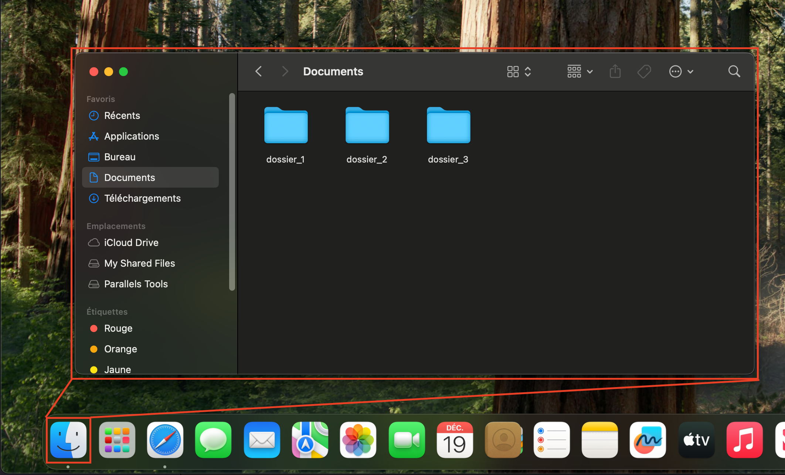
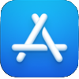
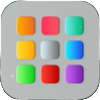

Écosystème d’Apple
Introduction
Bienvenue dans l’univers d’Apple! Que vous soyez familier avec les produits Apple ou que vous les découvriez pour la première fois, il est important de comprendre ce qui rend cet écosystème unique. L’écosystème d’Apple est constitué d’un ensemble de produits et services interconnectés conçus pour fonctionner harmonieusement. Cela inclut des appareils comme l’iPhone (iOS), l’iPad (iPadOS), le Mac (MacOS), l’Apple Watch (watchOS), le Vision Pro (visionOS) et l’Apple TV (tvOS), ainsi que des services tels qu’iCloud, Apple Music, et l’App Store.
Ce cours mettra principalement l’accent sur le développement pour iOS, la plateforme dédiée à l’iPhone, mais une compréhension globale de l’écosystème enrichira votre apprentissage.
Pourquoi l’écosystème Apple?
L’une des forces majeures d’Apple réside dans l’intégration poussée entre ses appareils et ses services. L’expérience utilisateur est conçue pour être fluide, intuitive et cohérente. Par exemple :
- - Vous pouvez commencer une tâche sur un appareil et la continuer sur un autre grâce à la fonction Handoff.
- - Votre Apple Watch peut déverrouiller automatiquement votre Mac sans intervention manuelle.
- - Les données synchronisées via iCloud assurent une continuité d’utilisation entre vos appareils.
Cette approche ne se limite pas à l’expérience utilisateur : en tant que développeurs, vous pourrez tirer parti de ces interactions pour créer des applications qui s’intègrent parfaitement dans cet environnement.
Une première expérience avec Apple
Pour ceux d’entre vous qui n’ont jamais utilisé de produits Apple, ne vous inquiétez pas. Ce cours est conçu pour vous guider pas à pas. Vous apprendrez à naviguer sur MacOS, utiliser Xcode (l’environnement de développement d’Apple), et explorer les bases de Swift, le langage de programmation utilisé pour iOS.
Conclusion
L’écosystème d’Apple est bien plus qu’une collection de produits : c’est un environnement interconnecté qui offre des opportunités uniques pour les développeurs. En explorant iOS, vous découvrirez non seulement comment créer des applications performantes, mais aussi comment concevoir des expériences qui s’intègrent naturellement à l’ensemble de cet écosystème. Préparez-vous à plonger dans le monde d’Apple et à développer vos premières applications iOS!
Introduction à MacOS
Présentation
Pour développer des applications iOS, l’utilisation du système d’exploitation MacOS est indispensable. En effet, MacOS est la seule plateforme qui prend en charge les outils et environnements de développement d’Apple, tels que Xcode, le logiciel officiel pour créer, tester et déployer des applications sur les appareils iOS.
Dans cette section, nous vous proposons une introduction à MacOS pour vous aider à prendre en main cet environnement de travail. Que vous soyez déjà habitué à MacOS ou que vous l’utilisiez pour la première fois, ce guide a pour objectif de vous fournir les bases nécessaires pour démarrer avec confiance.
Pourquoi MacOS est-il nécessaire pour le développement iOS ?
- Compatibilité exclusive avec Xcode : Xcode, l’environnement de développement intégré (IDE) fourni par Apple, est exclusivement disponible sur MacOS. Il regroupe tout ce dont vous avez besoin pour coder en Swift, concevoir des interfaces utilisateur, simuler des appareils iOS et publier vos applications sur l’App Store.
- Outils et fonctionnalités intégrés : MacOS offre des fonctionnalités natives qui facilitent le développement, comme le Terminal, les Command Line Tools, et une gestion optimisée des performances pour compiler et tester vos applications rapidement.
- Intégration avec l’écosystème Apple : MacOS s’intègre parfaitement avec d’autres produits Apple. Par exemple, si vous utilisez un iPhone pour tester vos applications, le processus de connexion et de transfert est fluide grâce à cette compatibilité native.
Ce que vous apprendrez dans cette section
- Prise en main de MacOS : Naviguer dans l’interface utilisateur, gérer les fichiers et utiliser les outils système de base.
- Installation et configuration de Xcode : Télécharger, installer et configurer l’environnement de développement pour débuter vos projets iOS.
- Astuces pour les débutants : Découvrir des raccourcis clavier, des réglages système et des outils pratiques pour améliorer votre productivité.
Avec cette introduction, vous serez prêt à explorer MacOS et à configurer un environnement de développement robuste. Passons maintenant à la découverte de cet outil indispensable pour créer vos premières applications iOS !
Interface de MacOS
Voici un aperçu de l'interface utilisateur de MacOS, qui est essentielle pour le développement d'applications iOS. Familiarisez-vous avec les éléments de l'interface pour naviguer efficacement et utiliser les outils de développement.

La Barre de Menu sur macOS (1, 2 et 3)
La barre de menu de MacOS est située en haut de l’écran et est présente en permanence. Elle constitue un élément central pour naviguer et interagir avec les applications et les réglages système. Voici une description des différents éléments visibles :
-
Menu Apple ()
- Position : À l’extrême gauche de la barre de menu.
- Fonctionnalités principales :
- Accès aux informations système (par exemple, “À propos de ce Mac”).
- Paramètres importants comme “Préférences Système”, “Mise en veille”, “Redémarrer”, ou “Éteindre”.
- Gestion des mises à jour logicielles et des paramètres utilisateur.
-
Menus spécifiques à l’application active
- Exemple dans l’image : L’application active est Safari, et ses menus sont visibles :
Les menus changent selon l’application en cours, s’adaptant aux outils disponibles pour cette application.
-
Icônes de la barre de menu (à droite)
Ces icônes permettent d’accéder rapidement à certaines fonctionnalités et paramètres système :
- Langue (CA) : Indique que le clavier est configuré en français canadien.
- Wi-Fi : Permet de voir et de gérer les connexions réseau.
- Volume : Contrôle le niveau sonore.
- Batterie (ou alimentation) : Montre l’état de la batterie ou si l’appareil est branché.
- Date et heure : Affiche la date et l’heure actuelles ; cliquer dessus donne accès à un calendrier.
Le Dock de MacOS (4)
Le Dock est une barre d’icônes située en bas de l’écran. Il permet d’accéder rapidement aux applications, aux dossiers et aux fichiers fréquemment utilisés. Voici quelques éléments clés à connaître :
-
Position : En bas de l’écran, par défaut.
Applications : Les icônes des applications installées apparaissent dans le Dock.
Applications actives (6) : Les applications ouvertes affichent un point lumineux sous leur icône.
Glisser-déposer : Vous pouvez ajouter ou retirer des éléments du Dock en les glissant-déposant.
Finder (5)
Le Finder est le gestionnaire de fichiers par défaut de macOS et une application essentielle pour naviguer dans le système de fichiers.
- Rôle principal : Permet de gérer les fichiers, dossiers, disques et périphériques connectés.
- Accès via le Dock : Représenté par une icône bleue avec un visage souriant (toujours situé à l’extrême gauche du Dock).
- Fenêtres du Finder : Affichent différents emplacements, comme le bureau, les fichiers récents, iCloud Drive, ou des dossiers spécifiques.
- Barre latérale : Propose un accès rapide aux dossiers et disques courants.
Créer un dossier
Voici deux options afin de créer un dossier dans le Finder :
À l’aide du clic droit
- Ouvrez une fenêtre Finder en cliquant sur l’icône Finder dans le Dock.
- Naviguez jusqu’à l’emplacement où vous souhaitez créer le dossier.
- Dans la barre de menu en haut de l’écran, cliquez sur Fichier.
- Sélectionnez Nouveau dossier dans le menu déroulant.
- Un dossier nommé “Sans titre” apparaîtra. Saisissez le nom souhaité, puis appuyez sur Entrée pour confirmer.
Vidéo démonstrative
Via la barre de menu
- Dans la barre de menu en haut de l’écran, cliquez sur Fichier.
- Sélectionnez Nouveau dossier dans le menu déroulant.
- Un dossier nommé “Sans titre” apparaîtra. Saisissez le nom souhaité, puis appuyez sur Entrée pour confirmer.
Vidéo démonstrative
Supprimer un dossier
Voici une vidéo explicative qui vous présente 4 méthodes pour supprimer un dossier sur macOS :
Installation de Xcode
Xcode est l’environnement de développement intégré (IDE) officiel d’Apple, utilisé pour créer des applications pour tous les systèmes Apple. C’est un outil puissant qui regroupe tout ce dont vous avez besoin pour concevoir, coder, tester et publier vos applications. Que vous soyez débutant ou développeur expérimenté, Xcode est un outil essentiel pour travailler efficacement dans l’écosystème Apple.
Configuration requise
Voici un lien utile qui vous fournit les versions d’Xcode compatibles avec les différentes versions de macOS, iOS et les autres systèmes d’exploitation d’Apple.
https://developer.apple.com/support/xcode/Installation de Xcode
Pour installer Xcode, suivez ces étapes simples :
- Ouvrez l’App Store sur votre Mac en cliquant sur l’icône de l’App Store () dans le Dock.
- Recherchez “Xcode” dans la barre de recherche en haut à droite de l’App Store.
- Cliquez sur le bouton “Obtenir” à côté de Xcode pour lancer le téléchargement.
- Suivez les instructions à l’écran pour installer Xcode sur votre Mac.
- Une fois l’installation terminée, ouvrez Xcode depuis le Launchpad () ou en le recherchant dans Spotlight (cmd + space).